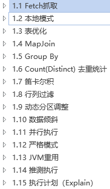
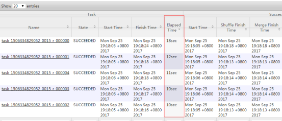
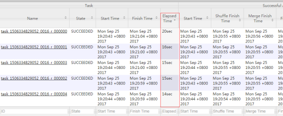
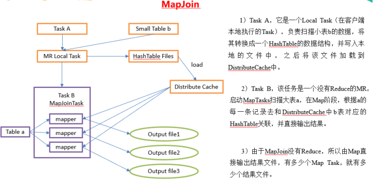
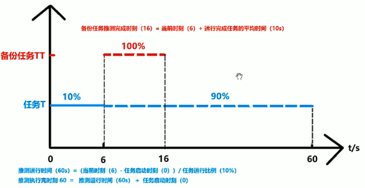

调优的主要目的防止数据倾斜，均匀利用分布式资源。

<property>
<name>hive.fetch.task.conversion</name>
<value>more</value>
<description>
Expects one of [none, minimal, more].
Some select queries can be converted to single FETCH task minimizing latency.
Currently the query should be single sourced not having any subquery and should not have
any aggregations or distincts (which incurs RS), lateral views and joins.
0. none : disable hive.fetch.task.conversion
1. minimal : SELECT STAR, FILTER on partition columns, LIMIT only
2. more : SELECT, FILTER, LIMIT only (support TABLESAMPLE and virtual columns)
</description>
</property>
hive (default)> set hive.fetch.task.conversion=none;
hive (default)> select * from emp;
hive (default)> select ename from emp;
hive (default)> select ename from emp limit 3;
hive (default)> set hive.fetch.task.conversion=more;
hive (default)> select * from emp;
hive (default)> select ename from emp;
hive (default)> select ename from emp limit 3;
set hive.exec.mode.local.auto=true; //开启本地mr
//设置local mr的最大输入数据量，当输入数据量小于这个值时采用local mr的方式，默认为134217728，即128M
set hive.exec.mode.local.auto.inputbytes.max=50000000;
//设置local mr的最大输入文件个数，当输入文件个数小于这个值时采用local mr的方式，默认为4
set hive.exec.mode.local.auto.input.files.max=10;
|
hive (default)> set hive.exec.mode.local.auto=true;
hive (default)> select * from emp cluster by deptno;
Time taken: 1.328 seconds, Fetched: 14 row(s)
hive (default)> set hive.exec.mode.local.auto=false;
hive (default)> select * from emp cluster by deptno;
Time taken: 20.09 seconds, Fetched: 14 row(s)
(1) 测试大表JOIN小表和小表JOIN大表的效率
// 创建大表
create table bigtable(id bigint, time bigint, uid string, keyword string, url_rank int, click_num int, click_url string) row format delimited fields terminated by '\t';
// 创建小表
create table smalltable(id bigint, time bigint, uid string, keyword string, url_rank int, click_num int, click_url string) row format delimited fields terminated by '\t';
// 创建join后表的语句
create table jointable(id bigint, time bigint, uid string, keyword string, url_rank int, click_num int, click_url string) row format delimited fields terminated by '\t';
hive (default)> load data local inpath '/opt/module/datas/bigtable' into table bigtable;
hive (default)>load data local inpath '/opt/module/datas/smalltable' into table smalltable;
set hive.auto.convert.join = false;
insert overwrite table jointable
select b.id, b.time, b.uid, b.keyword, b.url_rank, b.click_num, b.click_url
from smalltable s
left join bigtable b
on b.id = s.id;
Time taken: 35.921 seconds
insert overwrite table jointable
select b.id, b.time, b.uid, b.keyword, b.url_rank, b.click_num, b.click_url
from bigtable b
left join smalltable s
on s.id = b.id;
Time taken: 34.196 seconds
案例实操
(1) 配置mapred-site.xml
<property>
<name>mapreduce.jobhistory.address</name>
<value>hadoop102:10020</value>
</property>
<property>
<name>mapreduce.jobhistory.webapp.address</name>
<value>hadoop102:19888</value>
</property>
(2) 启动历史服务器
sbin/mr-jobhistory-daemon.sh start historyserver
(3) 查看jobhistory
http://192.168.1.102:19888/jobhistory
// 创建原始表
create table ori(id bigint, time bigint, uid string, keyword string, url_rank int, click_num int, click_url string) row format delimited fields terminated by '\t';
// 创建空id表
create table nullidtable(id bigint, time bigint, uid string, keyword string, url_rank int, click_num int, click_url string) row format delimited fields terminated by '\t';
// 创建join后表的语句
create table jointable(id bigint, time bigint, uid string, keyword string, url_rank int, click_num int, click_url string) row format delimited fields terminated by '\t';
hive (default)> load data local inpath '/opt/module/datas/ori' into table ori;
hive (default)> load data local inpath '/opt/module/datas/nullid' into table nullidtable;
hive (default)> insert overwrite table jointable
select n.* from nullidtable n left join ori o on n.id = o.id;
Time taken: 42.038 seconds
Time taken: 37.284 seconds
hive (default)> insert overwrite table jointable
select n.* from (select * from nullidtable where id is not null ) n left join ori o on n.id = o.id;
Time taken: 31.725 seconds
Time taken: 28.876 seconds
(1) 不随机分布空null值：
（1）设置5个reduce个数
set mapreduce.job.reduces = 5;
（2）JOIN两张表
insert overwrite table jointable
select n.* from nullidtable n left join ori b on n.id = b.id;
结果：如图所示，可以看出来，出现了数据倾斜，某些reducer的资源消耗远大于其他reducer。

(2) 随机分布空null值
（1）设置5个reduce个数
set mapreduce.job.reduces = 5;
（2）JOIN两张表
insert overwrite table jointable
select n.* from nullidtable n full join ori o on
case when n.id is null then concat('hive', rand()) else n.id end = o.id;
结果：如所示，可以看出来，消除了数据倾斜，负载均衡reducer的资源消耗

set hive.auto.convert.join = true; 默认为true
set hive.mapjoin.smalltable.filesize=25000000;

set hive.auto.convert.join = true; 默认为true
insert overwrite table jointable
select b.id, b.time, b.uid, b.keyword, b.url_rank, b.click_num, b.click_url
from smalltable s
join bigtable b
on s.id = b.id;
Time taken: 24.594 seconds
insert overwrite table jointable
select b.id, b.time, b.uid, b.keyword, b.url_rank, b.click_num, b.click_url
from bigtable b
join smalltable s
on s.id = b.id;
Time taken: 24.315 seconds
hive.map.aggr = true
hive.groupby.mapaggr.checkinterval = 100000
hive.groupby.skewindata = true
distinct id = select id from bigtable group by id
hive (default)> create table bigtable(id bigint, time bigint, uid string, keyword
string, url_rank int, click_num int, click_url string) row format delimited
fields terminated by '\t';
hive (default)> load data local inpath '/opt/module/datas/bigtable' into table bigtable;
set mapreduce.job.reduces = 5;
hive (default)> select count(distinct id) from bigtable;
Stage-Stage-1: Map: 1 Reduce: 1 Cumulative CPU: 7.12 sec HDFS Read: 120741990 HDFS Write: 7 SUCCESS
Total MapReduce CPU Time Spent: 7 seconds 120 msec
OK
c0
100001
Time taken: 23.607 seconds, Fetched: 1 row(s)
hive (default)> select count(id) from (select id from bigtable group by id);
Stage-Stage-1: Map: 1 Reduce: 5 Cumulative CPU: 17.53 sec HDFS Read: 120752703 HDFS Write: 580 SUCCESS
Stage-Stage-2: Map: 1 Reduce: 1 Cumulative CPU: 4.29 sec HDFS Read: 9409 HDFS Write: 7 SUCCESS
Total MapReduce CPU Time Spent: 21 seconds 820 msec
OK
_c0
100001
Time taken: 50.795 seconds, Fetched: 1 row(s)
虽然会多用一个Job来完成，但在数据量大的情况下，这个绝对是值得的。
hive (default)> select o.id from bigtable b
join ori o on o.id = b.id
where o.id <= 10;
Time taken: 34.406 seconds, Fetched: 100 row(s)
hive (default)> select b.id from bigtable b
join (select id from ori where id <= 10 ) o on b.id = o.id;
Time taken: 30.058 seconds, Fetched: 100 row(s)
hive.exec.dynamic.partition=true
hive.exec.dynamic.partition.mode=nonstrict
hive.exec.max.dynamic.partitions=1000
hive.exec.max.dynamic.partitions.pernode=100
hive.exec.max.created.files=100000
hive.error.on.empty.partition=false
create table ori_partitioned(id bigint, time bigint, uid string, keyword string, url_rank int, click_num int, click_url string)
partitioned by (p_time bigint)
row format delimited fields terminated by '\t';
hive (default)> load data local inpath '/home/atguigu/ds1' into table ori_partitioned partition(p_time='20111230000010') ;
hive (default)> load data local inpath '/home/atguigu/ds2' into table ori_partitioned partition(p_time='20111230000011') ;
|
create table ori_partitioned_target(id bigint, time bigint, uid string, keyword string, url_rank int, click_num int, click_url string)
PARTITIONED BY (p_time STRING)
row format delimited fields terminated by '\t';
set hive.exec.dynamic.partition = true;
set hive.exec.dynamic.partition.mode = nonstrict;
set hive.exec.max.dynamic.partitions = 1000;
set hive.exec.max.dynamic.partitions.pernode = 100;
set hive.exec.max.created.files = 100000;
set hive.error.on.empty.partition = false;
hive (default)> insert overwrite table ori_partitioned_target partition (p_time)
select id, time, uid, keyword, url_rank, click_num, click_url, p_time from ori_partitioned;
hive (default)> show partitions ori_partitioned_target;
主要的决定因素有：input的文件总个数，input的文件大小，集群设置的文件块大小。
不是。如果一个任务有很多小文件（远远小于块大小128m），则每个小文件也会被当做一个块，用一个map任务来完成，而一个map任务启动和初始化的时间远远大于逻辑处理的时间，就会造成很大的资源浪费。而且，同时可执行的map数是受限的。
不是。比如有一个127m的文件，正常会用一个map去完成，但这个文件只有一个或者两个小字段，却有几千万的记录，如果map处理的逻辑比较复杂，用一个map任务去做，肯定也比较耗时。
针对上面的问题2和3，我们需要采取两种方式来解决：即减少map数和增加map数；
(1) 只有reduce数为-1时修改切片数才会改变map的值，或者count(*) 这种底层模板就是1个reduce的。否则就是固定的设置值
(1) 执行查询
hive (default)> select count(*) from emp;
Hadoop job information for Stage-1: number of mappers: 1; number of reducers: 1
(2) 设置最大切片值为100个字节
hive (default)> set mapreduce.input.fileinputformat.split.maxsize=100;
hive (default)> select count(*) from emp;
Hadoop job information for Stage-1: number of mappers: 6; number of reducers: 1
hive.exec.reducers.bytes.per.reducer=256000000
hive.exec.reducers.max=1009
N=min(参数2，总输入数据量/参数1)
设置每个job的Reduce个数
set mapreduce.job.reduces = 15;
(1) 过多的启动和初始化reduce也会消耗时间和资源；
(2) 另外，有多少个reduce，就会有多少个输出文件，如果生成了很多个小文件，那么如果这些小文件作为下一个任务的输入，则也会出现小文件过多的问题；
(3) 在设置reduce个数的时候也需要考虑这两个原则：处理大数据量利用合适的reduce数；使单个reduce任务处理数据量大小要合适；
hive.map.aggr=true
Map 端部分聚合，相当于 Combiner
hive.groupby.skewindata=true
有数据倾斜的时候进行负载均衡，当选项设定为 true，生成的查询计划会有两个 MR Job。
第一个 MR Job 中，Map 的输出结果集合会随机分布到 Reduce 中，每个 Reduce 做部
分聚合操作，并输出结果，这样处理的结果是相同的 Group By Key 有可能被分发到不同
的 Reduce 中，从而达到负载均衡的目的；第二个 MR Job 再根据预处理的数据结果按照
Group By Key 分布到 Reduce 中（这个过程可以保证相同的 Group By Key 被分布到同
一个 Reduce 中），最后完成最终的聚合操作
set hive.input.format= org.apache.hadoop.hive.ql.io.CombineHiveInputFormat;
(1) 使用 map join 让小的维度表（1000 条以下的记录条数） 先进内存。在 map 端完成 reduce.
(1) 把空值的 key 变成一个字符串加上随机数，把倾斜的数据分到不同的 reduce 上，由于 null 值关联不上，处理后并不影响最终结果。
set hive.exec.parallel=true; //打开任务并行执行
set hive.exec.parallel.thread.number=16; //同一个sql允许最大并行度，默认为8。
<property>
<name>hive.mapred.mode</name>
<value>strict</value>
<description>
The mode in which the Hive operations are being performed.
In strict mode, some risky queries are not allowed to run. They include:
Cartesian Product.
No partition being picked up for a query.
Comparing bigints and strings.
Comparing bigints and doubles.
Orderby without limit.
</description>
</property>
<property>
<name>mapreduce.job.jvm.numtasks</name>
<value>10</value>
<description>How many tasks to run per jvm. If set to -1, there is
no limit.
</description>
</property>

<property>
<name>mapreduce.map.speculative</name>
<value>true</value>
<description>If true, then multiple instances of some map tasks may be executed in parallel.</description>
</property>
<property>
<name>mapreduce.reduce.speculative</name>
<value>true</value>
<description>If true, then multiple instances of some reduce tasks may be executed in parallel.</description>
</property>
<property>
<name>hive.mapred.reduce.tasks.speculative.execution</name>
<value>true</value>
<description>Whether speculative execution for reducers should be turned on. </description>
</property>
|
EXPLAIN [EXTENDED | DEPENDENCY | AUTHORIZATION] query
hive (default)> explain select * from emp;
hive (default)> explain select deptno, avg(sal) avg_sal from emp group by deptno;
hive (default)> explain extended select * from emp;
hive (default)> explain extended select deptno, avg(sal) avg_sal from emp group by deptno;